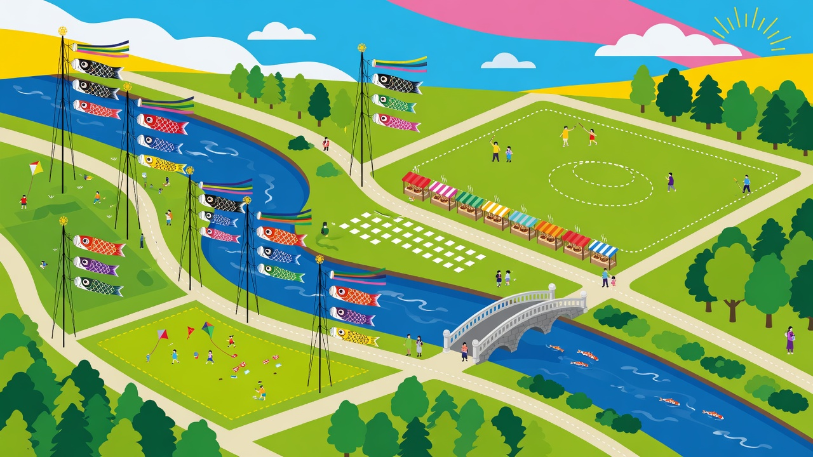
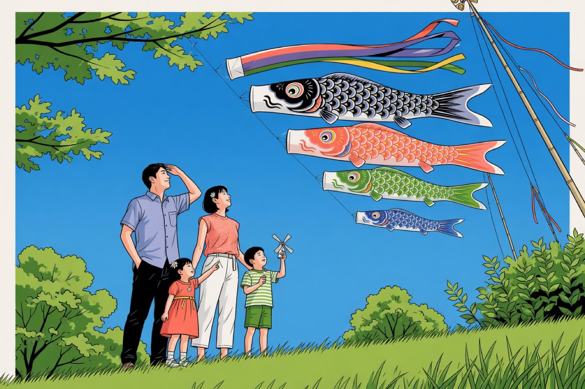
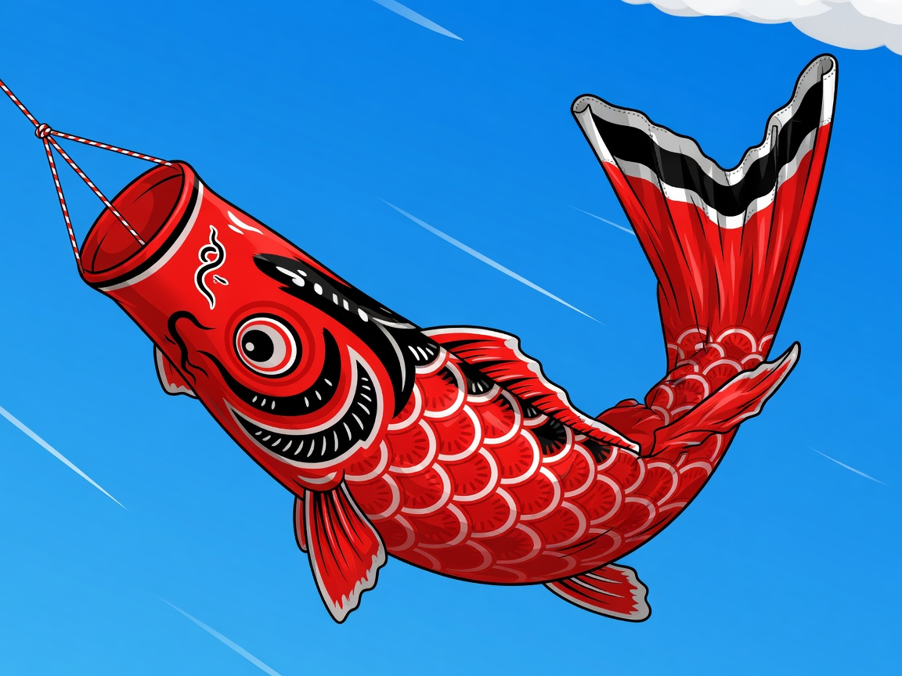

| Time | Event | Location |
|---|---|---|
| 07:30 | First poles raised East bank |
Pole 1–8 |
| 09:00 | Opening ceremony Main field |
Central lawn |
| 10:15 | All remaining streamers River path |
Poles 9–42 |
| 11:40 | Picnic opens South lawn |
Food area |
| 13:00 | Children’s races Lower field |
By the bridge |
| 14:30 | Make a small koinobori Workshop tent |
Near pole 19 |
| 16:00 | River parade East to west |
Along the path |
| 17:30 | Lanterns & close Water’s edge |
Main field |


